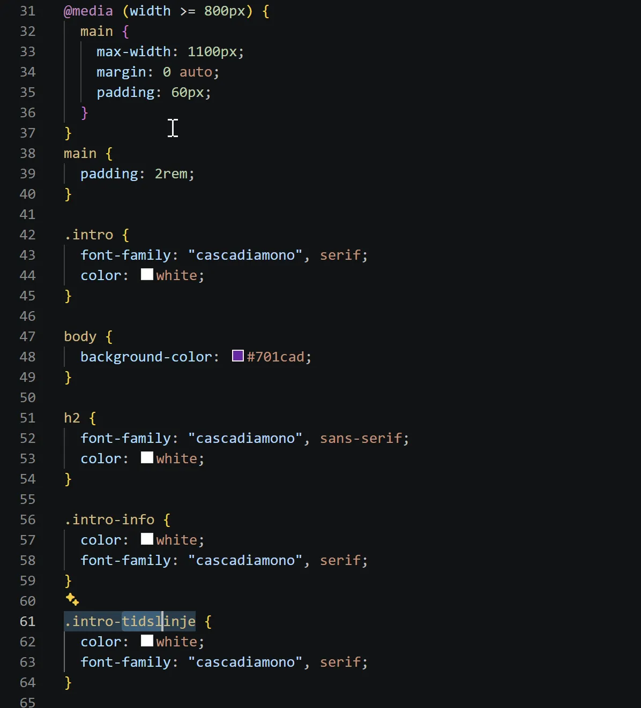
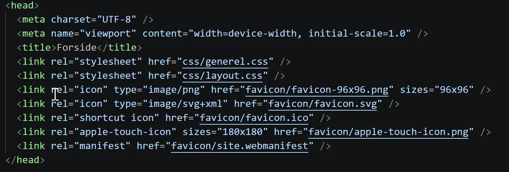
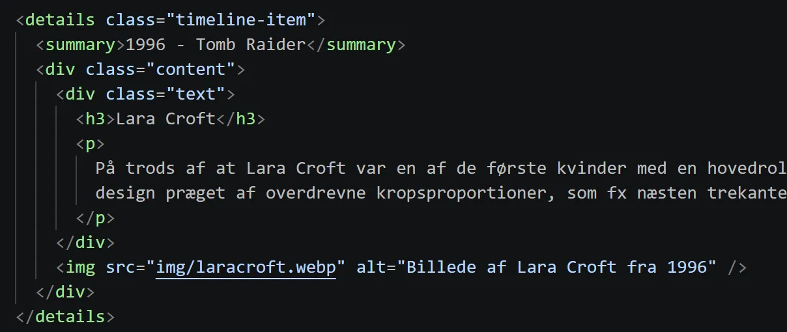

Tema 3 - UX/UI
Hvad lavede jeg?
Tema 3 handlede om UX og UI, hvor vi havde fokus på processen op til selve kodningen. Vi lærte hvordan man laver god research og digital prototype, og hvordan man dokumentere sin proces. Opgaven var at lave et site om et valgfrit emne.



Processen
En stor del af min proces involverede mig der var meget syg i en uge, derfor manglede jeg meget research og idégenerering. Dog var jeg hurtigt klar over hvilket emne mit site skulle handle om. Ud fra emnet udviklede jeg Lo-fi prototyper og wireframes, samt farver og visuel rød tråd.
Jeg blev introduceret til:
- Figma
- Mere kompliceret CSS-styling
- process dokumentation
Jeg lærte:
- At træffe design valg
- At lave relevant research
- At lave visuelt stærkt site
- At lave et interaktiv site
Refleksioner:
- Research er en uundværlig del af processen
- Der er uendeligt mange design valg at tænke over
- Det er vigtigt at have sin proces dokumenteret så man kan kigge tilbage